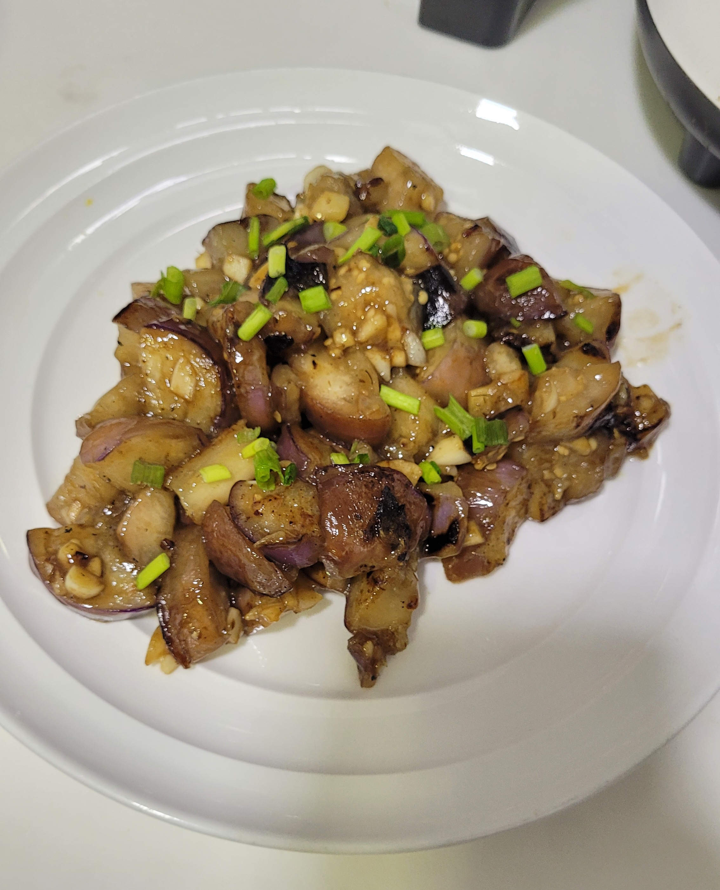

Stir-fry Eggplants with Garlic Sauce

Description
Stir-fry Eggplants is a simple delicacy that pairs well together with steamed rice. Below is a recipe of eggplants stir-fried with garlic sauce that you can easily make at home!
Ingredients
Serving size: 4 people
Pre-salting
- 2 small eggplants, bite-size pieces
- 1 tsp salt
- 1 tbsp cornstarch
Sauce
- 1 tbsp light soy sauce
- 1/2 tsp dark soy sauce
- 2 baby eggplant
- 1 tbsp water
- 2 tsp sugar
- 1 tsp cornstarch
Stir-fry
- 2 tbsp vegetable oil
- 1 tsp ginger, minced
- 3 cloves garlic, chopped
Instructions
- Place eggplant in a large bowl and add water to cover. Add 1 teaspoon salt, mix well. Place a pot lid on top to keep the eggplant under water for 15 minutes. Drain and pat dry
- Combine the sauce ingredients in a small bowl, mix well.
- Sprinkle eggplant with 1 tablespoon cornstarch and mix by hand, until eggplant is evenly coated with with a thin layer of cornstarch.
- Add 2 tablespoons oil to a big nonstick skillet and heat over medium high heat until hot. Spread eggplant across the bottom of the skillet without overlapping. Cook the eggplant one side at a time until all the surfaces are charred and the eggplant turns soft, 8 to 10 minutes in total. Transfer the eggplants to a plate. If the skillet gets too hot and starts to smoke, turn to medium heat.
- Add the remaining 1/2 teaspoon oil, the ginger and garlic into the same skillet. Stir a few times until fragrant. Then add all the eggplant back into the skillet.
- Mix the sauce again until cornstarch is fully dissolved and pour it over the eggplant. Immediately stir a few times, until the eggplant is evenly coated and the sauce thickens. Transfer everything to a big plate.
- Serve hot as a side or as main over steamed rice or noodles.